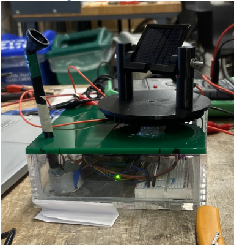
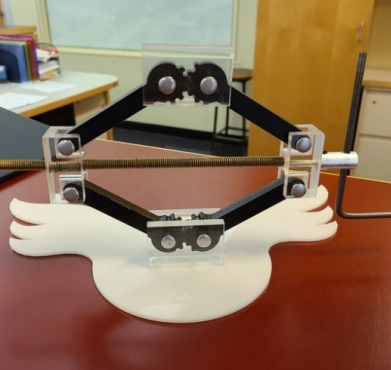

Create a model scissor jack using a CNC mill, lathe and laser cutter.
Create a mechanical fixture that can track light intensity and rotate a solar panel to face that maximum light intensity.

In this project, I created a mechanical fixture that could track the intensity of light and move a corresponding solar panel to face the direction of the maximum intensity of light.

In this project, I created a model scissor jack, using a CNC mill, lathe, and laser cutter. The delrin links and acrylic blocks were made on a mill, while the threaded rod, and aluminum turning piece were made on a lathe. The base was laser cut.